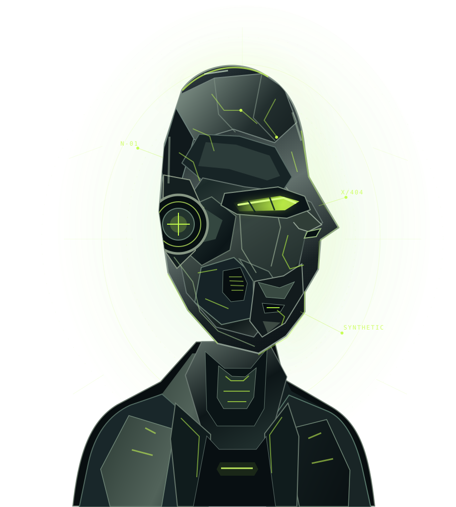

01 / COGNITION↗
Neural
Interface
Imagine thoughts moving at the speed of possibility. An intuitive connection between mind and machine.
The future isn't human or machine.
It's everything we can become together.
Meet NEX-01. A conceptual exploration of synthetic intelligence, engineered precision, and limitless possibility.

Where biological instinct meets engineered intelligence. Three pillars of a world without limits.
Imagine thoughts moving at the speed of possibility. An intuitive connection between mind and machine.
See beyond the visible. A new perspective shaped by intelligent, responsive sensory systems.
Designed to surpass conventional boundaries, with engineered adaptability at every layer.
A modular concept architecture with intelligence at its core. Select a subsystem to explore the next dimension of being.
A thought-driven interface bridging instinct and computation.
THE NEXT CHAPTER
STARTS WITH US.
Technology shouldn't replace what makes us human. It should expand what makes us extraordinary.
Enter the world of NEX-01. Explore the interface, challenge the limits, and see what lies beyond.